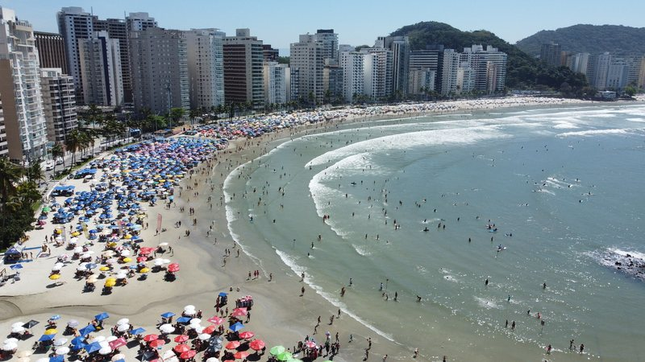

O Guarujá, conhecido como a "Pérola do Atlântico", é um dos principais destinos de praia do litoral de São Paulo
Localizado na Ilha de Santo Amaro, a cerca de 82 km da capital paulista, o município destaca-se por sua excelente infraestrutura hoteleira, resorts e restaurantes, abrigando mais de 27 praias ao longo de seus 22 km de litoral.
